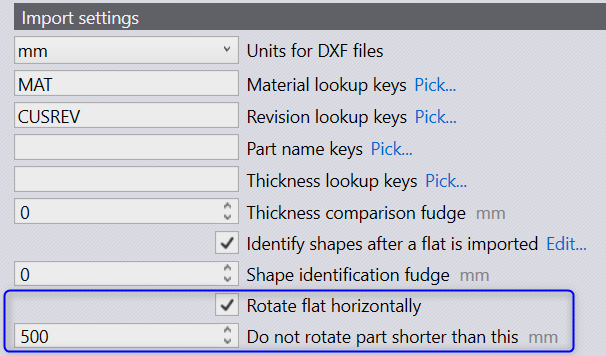

Generally cutting machine tables are rectangular and wider. To enhance the tooling feasibility, Praxis now rotates the part along the part width after the part is imported such that wider than taller.
Use factory . settings . import settings to control the rotation parameters. Uncheck the Rotate flat horizontally switch to disable the rotation. Set the height cut-off to control the rotation.
